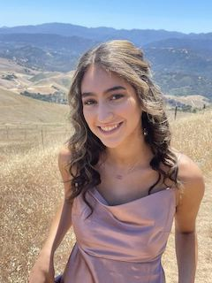

<!DOCTYPE html>

<html lang="en"></html>

    <head>
        <meta charset="UTF-8">
        <title>Mia Klotz's Portfolio</title>
        <link href="./css/exercise6.css" rel="stylesheet">
        <link rel="preconnect" href="https://fonts.googleapis.com">
        <link rel="preconnect" href="https://fonts.gstatic.com" crossorigin>
        <link href="https://fonts.googleapis.com/css2?family=Sigmar&display=swap" rel="stylesheet">
    </head>
    <body>
        <main>
            <h1>Meet Mia Klotz</h1>
            <p>Hi! I am a senior English major completing a certificate in Professional Writing and Technical Communication at the University of Massachusetts Amherst. I have also already completed a specialization in Writing, Rhetoric, and Literary Studies. I am passionate about pursuing a career in Technical Writing.</p>
            <h2>About Me!</h2>
                <hr>
                
                <p>I am a senior English major studying at the University of Massachusetts Amherst. I am currently pursuing a certificate in Professional Writing and Technical Communication and have completed a specilization in Writing, Rhetoric, and Literary Studies.</p>
                <p>I have worked at the W.E.B. Du Bois Library in the Scholarly Communications Office at UMass Amherst for the past three years and have gained hands-on experience sharing and finding open educational resourses (OER). Through this job I have spoken at an Open Access Week Panel, presented at two different Honors classes on searching for OER, and am currently working on my Honors Thesis where I am providing OER to a rural school in South America.</p>
                <p>I am also an Editorial and Design Production intern at the University of Massachusetts Amherst Press where I work on making edits for page corrections, organizing the Press' archive, proofing, creating character counts, and uploading books to Manifold, the Press' Open Access website. </p>
               <p>Through completing the certificate in Professional Writing and Technical Communication, I have found that an aspect I really enjoy is accessiblility. My research and scholarly work throughout my time at UMass has had a strong focus around open-access information and publishing.</p>
                <p>I am very passionate about a career in technical writing and would love to bring my past and current experience into a new role!</p>
               <h2>Contact Me!</h2>
               <hr>
                <p>View my LinkedIn Page Here!
               <a href="https://www.linkedin.com/in/miaklotz/">LinkedIn</a></p> 
                <p><a href="mailto:mklotz@umass.edu">Email me here!</a></p>
        </main>
    </body>

</html>